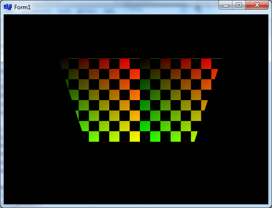

char bmp[256][256][3]; //0 ... èervená, 1 ... zelená, 2 ... modrá
for (int y=0;y<256;y++) // pro vsechny radky pixmapy
for (int x=0;x<256;x++) // pro vsechny pixely na radku
if ((y/32+x/32)%2)
bmp[y][x][0]= bmp[y][x][1]= bmp[y][x][2]= 0;// cierne policko
else
{ bmp[y][x][0]=x; bmp[y][x][1]=y; bmp[y][x][2]= 0; }
glEnable(GL_TEXTURE_2D); // povolime texturu (toto nemusí by�, lebo to máme zadané v Unit1.h)
glTexParameteri(GL_TEXTURE_2D, GL_TEXTURE_WRAP_S, GL_REPEAT); // v smere osi x povolime opakovanie textury
glTexParameteri(GL_TEXTURE_2D, GL_TEXTURE_WRAP_T, GL_REPEAT); // v smere osi y povolime opakovanie textury
glTexParameteri(GL_TEXTURE_2D, GL_TEXTURE_MAG_FILTER, GL_LINEAR); // spôsob vıpoètu bodov (textura vacsia)
glTexParameteri(GL_TEXTURE_2D, GL_TEXTURE_MIN_FILTER, GL_LINEAR); // spôsob vıpoètu bodov (textura mensia)
glTexImage2D(GL_TEXTURE_2D, 0, 3, 256, 256, 0, GL_RGB, GL_UNSIGNED_BYTE, &bmp);
|

|
glBegin(GL_QUADS);
//štvorec sa natiahne na štvorec
glTexCoord2f(0.0, 0.0); glVertex3f(-6, +6, -2);
glTexCoord2f(1.0, 0.0); glVertex3f(+6, +6, -2);
glTexCoord2f(1.0, 1.0); glVertex3f(+6, -6, -2);
glTexCoord2f(0.0, 1.0); glVertex3f(-6, -6, -2);
glEnd(); |

|
glBegin(GL_QUADS);
//štvorec sa natiahne na obdå�nik
glTexCoord2f(0.0, 0.0); glVertex3f(-6, +3, -1);
glTexCoord2f(1.0, 0.0); glVertex3f(+6, +3, -1);
glTexCoord2f(1.0, 1.0); glVertex3f(+6, -3, -1);
glTexCoord2f(0.0, 1.0); glVertex3f(-6, -3, -1);
glEnd(); |

|
glBegin(GL_QUADS);
//štvorec sa natiahne na rovnobe�ník
glTexCoord2f(0.0, 0.0); glVertex3f(-6, +3, 0);
glTexCoord2f(1.0, 0.0); glVertex3f(+3, +3, 0);
glTexCoord2f(1.0, 1.0); glVertex3f(+6, -3, 0);
glTexCoord2f(0.0, 1.0); glVertex3f(-3, -3, 0);
glEnd(); |

|
glBegin(GL_QUADS);
//lichobe�ník sa vyre�e zo štvorca
glTexCoord2f(0.0, 0.0); glVertex3f(-6, +4, 0);
glTexCoord2f(1.0, 0.0); glVertex3f(+6, +4, 0);
glTexCoord2f(1.0*10/12, 1.0); glVertex3f(+4, -4, 0);
glTexCoord2f(1.0*2/12, 1.0); glVertex3f(-4, -4, 0);
glEnd(); |

|
glBegin(GL_TRIANGLES);
//pravouhlı trojuholník sa vyre�e zo štvorca
glTexCoord2f(0.0, 0.0); glVertex3f(-6, +4, 0);
glTexCoord2f(1.0, 0.0); glVertex3f(+6, +4, 0);
glTexCoord2f(0.0, 1.0); glVertex3f(-6, -4, 0);
glEnd(); |

|
glBegin(GL_TRIANGLES);
//rovnoramennı trojuholník sa vyre�e zo štvorca
glTexCoord2f(0.0, 0.0); glVertex3f(-6, +4, 0);
glTexCoord2f(1.0, 0.0); glVertex3f(+6, +4, 0);
glTexCoord2f(0.5, 1.0); glVertex3f(0, -4, 0);
glEnd();
glBegin(GL_QUADS);
glEnd(); |
| 
|
//lichobe�ník sa vyre�e zo štvorca vo vodorovnom smere bude 2xto¾ko políèok
glBegin(GL_QUADS);
glTexCoord2f(0.0, 0.0); glVertex3f(-6, +4, 0);
glTexCoord2f(2.0, 0.0); glVertex3f(+6, +4, 0);
glTexCoord2f(2.0*10/12, 1.0); glVertex3f(+4, -4, 0);
glTexCoord2f(2.0*2/12, 1.0); glVertex3f(-4, -4, 0);
glEnd(); |